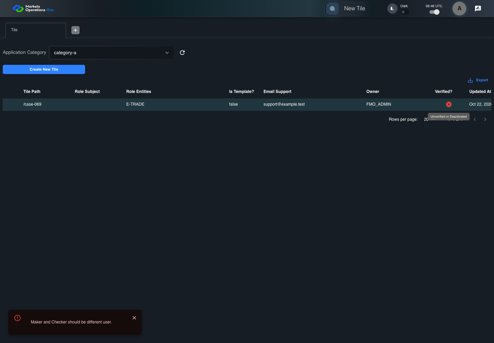
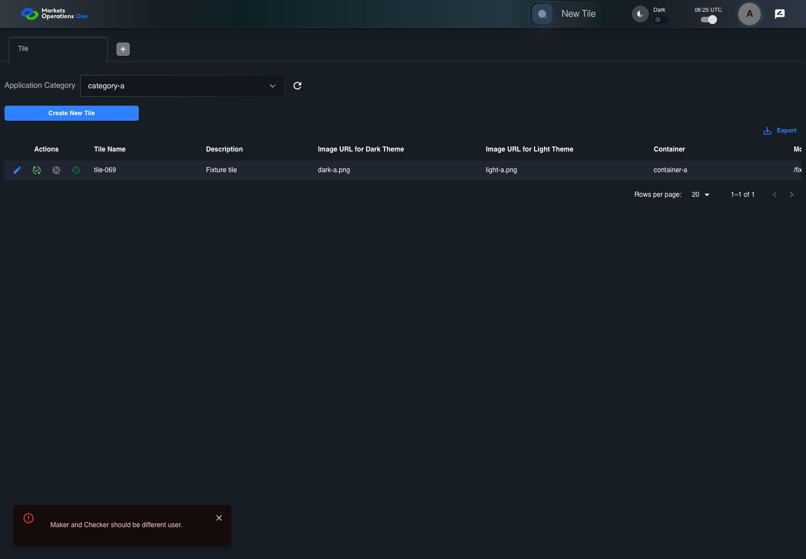
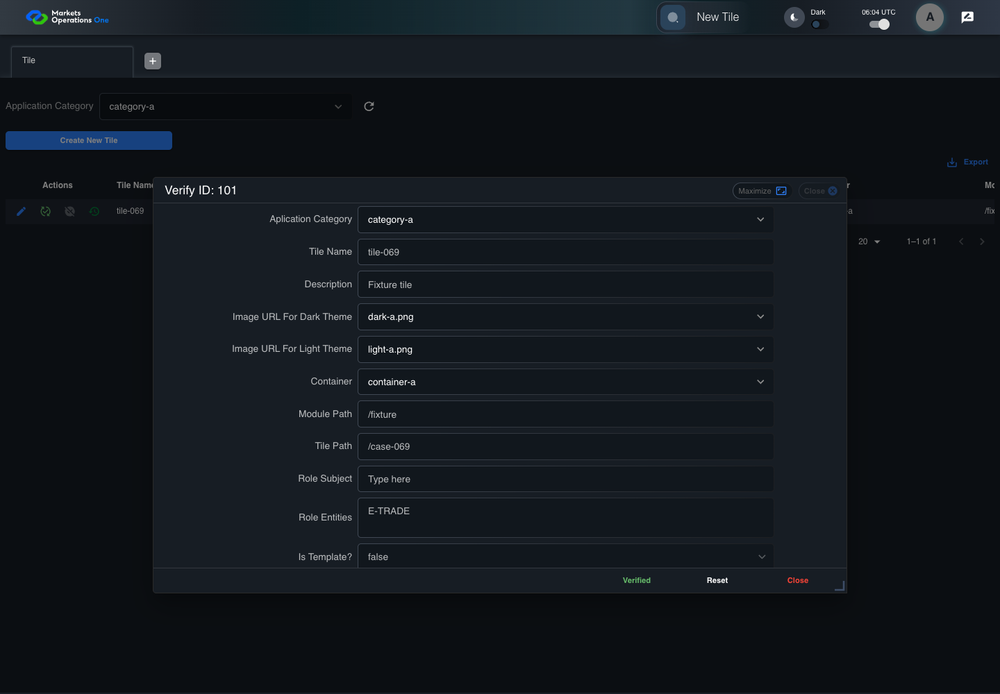

All canonical cases
BFF-ADM-069: Reject self-verification of Tile Business acceptance remains unverified. Owner: unknown. Review the canonical definition and fixture limits before acceptance.
Latest local result: PASS Business acceptance: NOT_ESTABLISHED.
The latest local result describes execution. The historical definition review assesses the case design before execution.
Latest step screenshot bindings: COMPLETE . 19/19 canonical steps have execution screenshots.
Bindings measure structural coverage only. They do not establish screenshot content quality or relevance.
Screenshot content review: NOT_REVIEWED . Recorded context does not establish human visual review.
Canonical Gherkin definition . Definition version: 2. SHA-256: 4e49ff3856ed0fcc5962eca04058606b28fa7828c73e79a7572b387694fed833.
Historical definition review (preflight): UNVERIFIED A definition review FAIL can coexist with local PASS. The definition failed preflight quality checks.
This historical review does not change the latest execution result. Resolve definition gaps before business acceptance.
Canonical Gherkin steps Feature: Admin authority
@BFF-ADM-069
Scenario: Reject self-verification of Tile
Given Admin A uses subject "admin-a" with role "FMO_ADMIN" in an isolated authenticated browser
And the controlled Tile fixture records the initial grid rows and persisted values
And Category 101 has label "category-a" and Import Map 201 has Module Name "container-a"
And both references belong to "FMO_ADMIN" and the Tile page category filter value is Category 101
And the Tile grid has record "101" owned by "FMO_ADMIN"
And the baseline fixture data defines "Tile Name" as "tile-069"
And the baseline fixture data defines "Module Path" as "/fixture"
And the baseline fixture data defines "Tile Path" as "/case-069"
And the baseline fixture data defines "Role Entities" as "E-TRADE"
And the baseline fixture data defines "Filter Rule" as ""
And the baseline Tile references use "Aplication Category" "category-a" and "Container" "container-a"
And Tile record "101" is inactive when this browser loads its grid
And its stored "updatedBy" value is "admin-a"
When Admin A clicks the button labeled "Verify" in the Tile grid row with "Record Id" "101"
Then the dialog titled "verify ID: 101" is visible on the Tile administration page
When Admin A clicks the button labeled "Verified" in dialog "verify ID: 101"
Then the alert with severity "error" in the portal snackbar contains the exact text "Maker and Checker should be different user."
And in the Tile data grid with column "Record Id", the "Verified?" cell for Tile record "101" has status tooltip "Unverified or Deactivated" on the Tile administration page
And the persisted-record readback for record "101" has "active" equal to false Acceptance and evidence limits: NO_COMPLETE_REAL_APPLICATION_BINDING, CANONICAL_REVIEW_OR_EVIDENCE_UNRESOLVED.
Planned essential canonical frames: 3. Plan completeness requires separate review.
Latest attempt BFF-ADM-069 current BFF administration through actual UI PASS · application/run-072/bff-adm-069-current-bff-administration-through-actual-ui-9b8f8a5acbb3-attempt-1 · ACTUAL_APPLICATION_LOCAL_SERVICES
Actual current React and exact-current BFF admin controllers/services/JPA with actual migration DDL in disposable PostgreSQL. Controlled OUD/EMS2 identities and local Spring bootstrap. Fixture SQL seeds/mutates isolated records; service errors are actual database errors. Undefined agreed messages remain unresolved acceptance.
2026-10-22T06:46:14.107Z to 2026-10-22T06:46:21.365Z
Assertions and result · Artifact manifest · Exact run inputs and source hashes
Result SHA-256: 50ffbeb58a458f460201c9d174301048726168d4e350a6f550cd2087ebc01148 Playwright trace
Machine observations Screenshot capture: CAPTURED. Named frames: 20.
Step screenshot bindings: COMPLETE. 19/19 canonical steps have execution screenshots.
Bindings measure structural coverage only. They do not establish screenshot content quality or relevance.
Screenshot content review: NOT_REVIEWED . Recorded context: 0/20 frames. Identical image bytes: 0 repeated frames. Recorded context does not establish human visual review.
Canonical step timeline Given Admin A uses subject "admin-a" with role "FMO_ADMIN" in an isolated authenticated browser
1. step-01 Visible state after step 1: Given Admin A uses subject "admin-a" with role "FMO_ADMIN" in an isolated authenticated browser
2026-10-22T06:46:18.355Z · 1440×1000b297d0c42afb886025742f38f41aa8caa439901c03608e893050d21f23f6246f And the controlled Tile fixture records the initial grid rows and persisted values
2. step-02 Visible state after step 2: And the controlled Tile fixture records the initial grid rows and persisted values
2026-10-22T06:46:18.504Z · 1440×1000babc3db3a9a4730a8d53036751a7f3764918a42e75ab6e81dfa029f60f8a1509 And Category 101 has label "category-a" and Import Map 201 has Module Name "container-a"
3. step-03 Visible state after step 3: And Category 101 has label "category-a" and Import Map 201 has Module Name "container-a"
2026-10-22T06:46:18.555Z · 1440×100042bddd815f578dcf758c32cda94c7ca9869c5c1d00e90201d3a0343370c312f6 And both references belong to "FMO_ADMIN" and the Tile page category filter value is Category 101
4. step-04 Visible state after step 4: And both references belong to "FMO_ADMIN" and the Tile page category filter value is Category 101
2026-10-22T06:46:18.617Z · 1440×10007746f6f91729aaabf49e3053ecb9104daa6d0e3a2732607ab68a7d88cdabe717 And the Tile grid has record "101" owned by "FMO_ADMIN"
5. step-05 Visible state after step 5: And the Tile grid has record "101" owned by "FMO_ADMIN"
2026-10-22T06:46:18.667Z · 1440×1000151535f765c191b1031e39728c2027ac34f5fd9a52de8f54d32744bec23a4dda And the baseline fixture data defines "Tile Name" as "tile-069"
6. step-06 Visible state after step 6: And the baseline fixture data defines "Tile Name" as "tile-069"
2026-10-22T06:46:18.721Z · 1440×1000b6b6d5e4b567b735d7b9d55a292a4e0d1888a018c2a79640ea42c17ec2b4dd07 And the baseline fixture data defines "Module Path" as "/fixture"
7. step-07 Visible state after step 7: And the baseline fixture data defines "Module Path" as "/fixture"
2026-10-22T06:46:18.786Z · 1440×10008bfe73c659729d8e5d4b4058a4ee9ce347c30d05316a6105636d4b4b6a70e0e5 And the baseline fixture data defines "Tile Path" as "/case-069"
8. step-08 Visible state after step 8: And the baseline fixture data defines "Tile Path" as "/case-069"
2026-10-22T06:46:18.850Z · 1440×1000f14c4011595cb1903fede259cb741a4adce074b09304bc921d660cb5dcbca4ea And the baseline fixture data defines "Role Entities" as "E-TRADE"
9. step-09 Visible state after step 9: And the baseline fixture data defines "Role Entities" as "E-TRADE"
2026-10-22T06:46:18.901Z · 1440×10003b055906043a826d8f36cb4c4da8be343ed9891462c679c574456d9ea9f2e482 And the baseline fixture data defines "Filter Rule" as ""
10. step-10 Visible state after step 10: And the baseline fixture data defines "Filter Rule" as ""
2026-10-22T06:46:18.951Z · 1440×1000677e0865103b726c68bf2d35f44094998a49048b98d3d951d05f27b93a7f587c And the baseline Tile references use "Aplication Category" "category-a" and "Container" "container-a"
11. step-11 Visible state after step 11: And the baseline Tile references use "Aplication Category" "category-a" and "Container" "container-a"
2026-10-22T06:46:19.011Z · 1440×10009271e9cb6c892dddf6c3990ee75c4917889a2f36e72678c67672d99f80a90d05 And Tile record "101" is inactive when this browser loads its grid
12. step-12 Visible state after step 12: And Tile record "101" is inactive when this browser loads its grid
2026-10-22T06:46:19.084Z · 1440×1000b8ce7e6ee379abd952bf406522a5f60e3c97f2054787b6bae1e8bd0b77b209f5 And its stored "updatedBy" value is "admin-a"
13. step-13 Visible state after step 13: And its stored "updatedBy" value is "admin-a"
2026-10-22T06:46:19.149Z · 1440×1000a09de653725dc8fa30224d3630e211358f396e915a71a18e737d4ed9236146fc When Admin A clicks the button labeled "Verify" in the Tile grid row with "Record Id" "101"
14. step-14 Visible state after step 14: When Admin A clicks the button labeled "Verify" in the Tile grid row with "Record Id" "101"
2026-10-22T06:46:19.472Z · 1440×100001be5b2455d4051eb2530823fa3b118f0e4c542f6a2dba4b2c25f3fed0e61e2a Then the dialog titled "verify ID: 101" is visible on the Tile administration page
15. step-15 Visible state after step 15: Then the dialog titled "verify ID: 101" is visible on the Tile administration page
2026-10-22T06:46:19.553Z · 1440×1000cbbba48b3b60cb53f7ff26a4708c8823878f5dbce377540951c7401f928e102c When Admin A clicks the button labeled "Verified" in dialog "verify ID: 101"
16. step-16 Visible state after step 16: When Admin A clicks the button labeled "Verified" in dialog "verify ID: 101"
2026-10-22T06:46:19.805Z · 1440×100039e71ad90d112b464e65f556c42751b889ddfb13b59ccba2bbd7ee8a0769bed5 Then the alert with severity "error" in the portal snackbar contains the exact text "Maker and Checker should be different user."
17. step-17 Visible state after step 17: Then the alert with severity "error" in the portal snackbar contains the exact text "Maker and Checker should be different user."
2026-10-22T06:46:19.871Z · 1440×100047e6502bbf2d69bb55931d8f7ebaac1c0bd4fefaba6ff03c491747c50ad6aca6 And in the Tile data grid with column "Record Id", the "Verified?" cell for Tile record "101" has status tooltip "Unverified or Deactivated" on the Tile administration page
18. step-18 Visible state after step 18: And in the Tile data grid with column "Record Id", the "Verified?" cell for Tile record "101" has status tooltip "Unverified or Deactivated" on the Tile administration page
2026-10-22T06:46:20.388Z · 1440×1000a3eb141c1b6dbfba2a3cca0e8a1e94609578bf90ead6c08bb0069b9ee6baaf70 And the persisted-record readback for record "101" has "active" equal to false
19. step-19 Visible state after step 19: And the persisted-record readback for record "101" has "active" equal to false
2026-10-22T06:46:20.510Z · 1440×1000f36d52275b4ebd28c38ca69c57db3879ecaa417417bd969326f22c286c21118c Additional named frames 
20. final-result The final visible state after the named test assertions.
2026-10-22T06:46:20.671Z · 1440×1000903e29f559d97b1daaa79dd7ac7269ca6ec14aa06479af776f68279b677b978d Screenshots establish visible state only. Assertions and traces support functional claims.
Earlier attempt history (2) Earlier attempt PASS (superseded by latest PASS) BFF-ADM-069 current BFF administration through actual UI PASS · application/run-066/bff-adm-069-current-bff-administration-through-actual-ui-9b8f8a5acbb3-attempt-1 · ACTUAL_APPLICATION_LOCAL_SERVICES
Actual current React and exact-current BFF admin controllers/services/JPA with actual migration DDL in disposable PostgreSQL. Controlled OUD/EMS2 identities and local Spring bootstrap. Fixture SQL seeds/mutates isolated records; service errors are actual database errors. Undefined agreed messages remain unresolved acceptance.
2026-10-22T06:25:45.370Z to 2026-10-22T06:25:49.044Z
Assertions and result · Artifact manifest · Exact run inputs and source hashes
Result SHA-256: f822c40acc14e865dd289fd3a3a5d4dae9d75ceb982e150613ae6d23267547ff Playwright trace
Machine observations Screenshot capture: CAPTURED. Named frames: 20.
Step screenshot bindings: COMPLETE. 19/19 canonical steps have execution screenshots.
Bindings measure structural coverage only. They do not establish screenshot content quality or relevance.
Screenshot content review: NOT_REVIEWED . Recorded context: 0/20 frames. Identical image bytes: 5 repeated frames. Recorded context does not establish human visual review.
Canonical step timeline Given Admin A uses subject "admin-a" with role "FMO_ADMIN" in an isolated authenticated browser
1. step-01 Visible state after step 1: Given Admin A uses subject "admin-a" with role "FMO_ADMIN" in an isolated authenticated browser
2026-10-22T06:25:47.215Z · 1440×10004591879225ebb276f682e60ff753595122507f2ff22b924323c3d04b32662df4 And the controlled Tile fixture records the initial grid rows and persisted values
2. step-02 Visible state after step 2: And the controlled Tile fixture records the initial grid rows and persisted values
2026-10-22T06:25:47.330Z · 1440×1000b51c3089a856b583494b5b63403b4ff306d904ccea2f747eb4b65be6269413cc And Category 101 has label "category-a" and Import Map 201 has Module Name "container-a"
3. step-03 Visible state after step 3: And Category 101 has label "category-a" and Import Map 201 has Module Name "container-a"
2026-10-22T06:25:47.362Z · 1440×1000615f542a850f062e2141867cb48010083cf5bfa7471e9d1c9fe714ac18570e30 And both references belong to "FMO_ADMIN" and the Tile page category filter value is Category 101
4. step-04 Visible state after step 4: And both references belong to "FMO_ADMIN" and the Tile page category filter value is Category 101
2026-10-22T06:25:47.396Z · 1440×1000615f542a850f062e2141867cb48010083cf5bfa7471e9d1c9fe714ac18570e30 Image bytes match frame 3. An unchanged image can be valid for consecutive assertions. This match does not establish correct step content.
And the Tile grid has record "101" owned by "FMO_ADMIN"
5. step-05 Visible state after step 5: And the Tile grid has record "101" owned by "FMO_ADMIN"
2026-10-22T06:25:47.429Z · 1440×10008ac9917c4cae75ee19e145f2c2dc091cbb7fdc4bcc20bf0b82ca482de1a3fb4a And the baseline fixture data defines "Tile Name" as "tile-069"
6. step-06 Visible state after step 6: And the baseline fixture data defines "Tile Name" as "tile-069"
2026-10-22T06:25:47.462Z · 1440×10008ac9917c4cae75ee19e145f2c2dc091cbb7fdc4bcc20bf0b82ca482de1a3fb4a Image bytes match frame 5. An unchanged image can be valid for consecutive assertions. This match does not establish correct step content.
And the baseline fixture data defines "Module Path" as "/fixture"
7. step-07 Visible state after step 7: And the baseline fixture data defines "Module Path" as "/fixture"
2026-10-22T06:25:47.495Z · 1440×1000eb46e2de64e52e54a17c78e5a59ca640946e3c72a81e3a1d3b84e9cc81509522 And the baseline fixture data defines "Tile Path" as "/case-069"
8. step-08 Visible state after step 8: And the baseline fixture data defines "Tile Path" as "/case-069"
2026-10-22T06:25:47.529Z · 1440×1000eb46e2de64e52e54a17c78e5a59ca640946e3c72a81e3a1d3b84e9cc81509522 Image bytes match frame 7. An unchanged image can be valid for consecutive assertions. This match does not establish correct step content.
And the baseline fixture data defines "Role Entities" as "E-TRADE"
9. step-09 Visible state after step 9: And the baseline fixture data defines "Role Entities" as "E-TRADE"
2026-10-22T06:25:47.562Z · 1440×1000d6d35b5985736f2ea66a8e835181f69f2d1b7647279781d10c1436d8a5063032 And the baseline fixture data defines "Filter Rule" as ""
10. step-10 Visible state after step 10: And the baseline fixture data defines "Filter Rule" as ""
2026-10-22T06:25:47.596Z · 1440×1000d6d35b5985736f2ea66a8e835181f69f2d1b7647279781d10c1436d8a5063032 Image bytes match frame 9. An unchanged image can be valid for consecutive assertions. This match does not establish correct step content.
And the baseline Tile references use "Aplication Category" "category-a" and "Container" "container-a"
11. step-11 Visible state after step 11: And the baseline Tile references use "Aplication Category" "category-a" and "Container" "container-a"
2026-10-22T06:25:47.628Z · 1440×10004531a3debb7e1aef3a3a530df9973d670b5d898869b38f89a1cf9fdc5f4e6030 And Tile record "101" is inactive when this browser loads its grid
12. step-12 Visible state after step 12: And Tile record "101" is inactive when this browser loads its grid
2026-10-22T06:25:47.663Z · 1440×10004531a3debb7e1aef3a3a530df9973d670b5d898869b38f89a1cf9fdc5f4e6030 Image bytes match frame 11. An unchanged image can be valid for consecutive assertions. This match does not establish correct step content.
And its stored "updatedBy" value is "admin-a"
13. step-13 Visible state after step 13: And its stored "updatedBy" value is "admin-a"
2026-10-22T06:25:47.696Z · 1440×10008bb64f3e213bc6527013c6cd24068c7b5f2e39471ce81b721218ec00cf771f48 When Admin A clicks the button labeled "Verify" in the Tile grid row with "Record Id" "101"
14. step-14 Visible state after step 14: When Admin A clicks the button labeled "Verify" in the Tile grid row with "Record Id" "101"
2026-10-22T06:25:47.985Z · 1440×1000efff9dcd0afdf9486113c3ed60ced6b93f9e6a5849f755df01b39ed77b989db0 Then the dialog titled "verify ID: 101" is visible on the Tile administration page
15. step-15 Visible state after step 15: Then the dialog titled "verify ID: 101" is visible on the Tile administration page
2026-10-22T06:25:48.034Z · 1440×100092fd7582e8b300aa6c2419bfc4396994a93a50ffee007eab26ca1d735ab08d27 When Admin A clicks the button labeled "Verified" in dialog "verify ID: 101"

16. step-16 Visible state after step 16: When Admin A clicks the button labeled "Verified" in dialog "verify ID: 101"
2026-10-22T06:25:48.248Z · 1440×10002ea4d4381ce8d3494f8ce635bcc66b4ab32290c92009f27569a604730106636e Then the alert with severity "error" in the portal snackbar contains the exact text "Maker and Checker should be different user."
17. step-17 Visible state after step 17: Then the alert with severity "error" in the portal snackbar contains the exact text "Maker and Checker should be different user."
2026-10-22T06:25:48.280Z · 1440×1000a13817bb468597a3dd171d1dceef62e9b2e50e1d8a4b1a4a7a70eb40a2080899 And in the Tile data grid with column "Record Id", the "Verified?" cell for Tile record "101" has status tooltip "Unverified or Deactivated" on the Tile administration page
18. step-18 Visible state after step 18: And in the Tile data grid with column "Record Id", the "Verified?" cell for Tile record "101" has status tooltip "Unverified or Deactivated" on the Tile administration page
2026-10-22T06:25:48.703Z · 1440×1000a1d098b4929e90b2bf8bbc6fa97a814ca32307e6fb7dd7238608a986c1df252b And the persisted-record readback for record "101" has "active" equal to false
19. step-19 Visible state after step 19: And the persisted-record readback for record "101" has "active" equal to false
2026-10-22T06:25:48.748Z · 1440×1000b7f330d14d6a8c5d9b2e136186e011b39ba81395cd9c0a9a4a28f8c896b3ff31 Additional named frames 20. final-result The final visible state after the named test assertions.
2026-10-22T06:25:48.813Z · 1440×1000934257ae72c0adac3fa3df459dc8f0a9bb86a7daaa31ef9d6dd4d2687cc90303 Screenshots establish visible state only. Assertions and traces support functional claims.
Earlier attempt PASS (superseded by latest PASS) BFF-ADM-069 current BFF administration through actual UI PASS · application/run-062/bff-adm-069-current-bff-administration-through-actual-ui-9b8f8a5acbb3-attempt-1 · ACTUAL_APPLICATION_LOCAL_SERVICES
Actual current React and exact-current BFF admin controllers/services/JPA with actual migration DDL in disposable PostgreSQL. Controlled OUD/EMS2 identities and local Spring bootstrap. Fixture SQL seeds/mutates isolated records; service errors are actual database errors. Undefined agreed messages remain unresolved acceptance.
2026-10-22T06:04:08.832Z to 2026-10-22T06:04:16.738Z
Assertions and result · Artifact manifest · Exact run inputs and source hashes
Result SHA-256: e746201ad068883d1a4aa3a2d0d966ded869567f92a5212ccc48a1e061b3dddf Playwright trace
Machine observations Screenshot capture: CAPTURED. Named frames: 20.
Step screenshot bindings: COMPLETE. 19/19 canonical steps have execution screenshots.
Bindings measure structural coverage only. They do not establish screenshot content quality or relevance.
Screenshot content review: NOT_REVIEWED . Recorded context: 0/20 frames. Identical image bytes: 0 repeated frames. Recorded context does not establish human visual review.
Canonical step timeline Given Admin A uses subject "admin-a" with role "FMO_ADMIN" in an isolated authenticated browser
1. step-01 Visible state after step 1: Given Admin A uses subject "admin-a" with role "FMO_ADMIN" in an isolated authenticated browser
2026-10-22T06:04:13.092Z · 1440×100066592eccca5a109d7df8754d0f434eec960d673bd40ef3cd96f84a0c7a05ed2b And the controlled Tile fixture records the initial grid rows and persisted values
2. step-02 Visible state after step 2: And the controlled Tile fixture records the initial grid rows and persisted values
2026-10-22T06:04:13.301Z · 1440×10003832b8189c7a95617cd9f5485e7bf1ef38a61a34887feb66d541cad04ff20e06 And Category 101 has label "category-a" and Import Map 201 has Module Name "container-a"
3. step-03 Visible state after step 3: And Category 101 has label "category-a" and Import Map 201 has Module Name "container-a"
2026-10-22T06:04:13.384Z · 1440×1000e7d7b7f204004b190fbb57595b1e1d6e1ebb58ae482619ff5899062bcb87bc8a And both references belong to "FMO_ADMIN" and the Tile page category filter value is Category 101
4. step-04 Visible state after step 4: And both references belong to "FMO_ADMIN" and the Tile page category filter value is Category 101
2026-10-22T06:04:13.471Z · 1440×1000fdb1b180bc90fbb167a41d97efe1bc290fbe31700fbb23b92344a0fa90218afc And the Tile grid has record "101" owned by "FMO_ADMIN"
5. step-05 Visible state after step 5: And the Tile grid has record "101" owned by "FMO_ADMIN"
2026-10-22T06:04:13.570Z · 1440×10002c91038319a3db8379a562bd4462c4d226b986ea620ab54c80da8e285d01c2e4 And the baseline fixture data defines "Tile Name" as "tile-069"
6. step-06 Visible state after step 6: And the baseline fixture data defines "Tile Name" as "tile-069"
2026-10-22T06:04:13.708Z · 1440×100001ea014511460a349af205312013dc73b9c5162a6261d0920deba27292a81c0b And the baseline fixture data defines "Module Path" as "/fixture"
7. step-07 Visible state after step 7: And the baseline fixture data defines "Module Path" as "/fixture"
2026-10-22T06:04:13.821Z · 1440×1000d5f3768876645983d9ef9fcd01ccb7b22a221942409e7239f1e9c8e60e4e0290 And the baseline fixture data defines "Tile Path" as "/case-069"
8. step-08 Visible state after step 8: And the baseline fixture data defines "Tile Path" as "/case-069"
2026-10-22T06:04:13.908Z · 1440×10001f9d4a7f07bcfb0f188951e5e1429551f411649695d5016b3038682d9482f915 And the baseline fixture data defines "Role Entities" as "E-TRADE"
9. step-09 Visible state after step 9: And the baseline fixture data defines "Role Entities" as "E-TRADE"
2026-10-22T06:04:14.017Z · 1440×1000d3764c798c9a15ffc3e33bfad02fca3c607099adf87904f3691de296c6f7649b And the baseline fixture data defines "Filter Rule" as ""
10. step-10 Visible state after step 10: And the baseline fixture data defines "Filter Rule" as ""
2026-10-22T06:04:14.105Z · 1440×10006c963fb7cad3e19bde044f3a10e0c4a12f55fa29178453473f7d8782d1febd43 And the baseline Tile references use "Aplication Category" "category-a" and "Container" "container-a"
11. step-11 Visible state after step 11: And the baseline Tile references use "Aplication Category" "category-a" and "Container" "container-a"
2026-10-22T06:04:14.210Z · 1440×1000c49ab3b8b4534ab8811812fddba463a709209cc250340e490ac83c831431c194 And Tile record "101" is inactive when this browser loads its grid
12. step-12 Visible state after step 12: And Tile record "101" is inactive when this browser loads its grid
2026-10-22T06:04:14.307Z · 1440×10001a7ea29de61f82bace50d150dd61fcf3850641e3a0e2e84837ed3a835ebf9f1f And its stored "updatedBy" value is "admin-a"
13. step-13 Visible state after step 13: And its stored "updatedBy" value is "admin-a"
2026-10-22T06:04:14.431Z · 1440×10009544735b3de354f86a3f6c9ef586593a9ceb208928bc2098bcc3068027480121 When Admin A clicks the button labeled "Verify" in the Tile grid row with "Record Id" "101"

14. step-14 Visible state after step 14: When Admin A clicks the button labeled "Verify" in the Tile grid row with "Record Id" "101"
2026-10-22T06:04:15.287Z · 1440×1000308d60070f6611fe633e9b5362b3f6c6d2d0f5addfe967f9a62127985c0b7b4d Then the dialog titled "verify ID: 101" is visible on the Tile administration page
15. step-15 Visible state after step 15: Then the dialog titled "verify ID: 101" is visible on the Tile administration page
2026-10-22T06:04:15.407Z · 1440×10007d5cd651b691eb0c996949280fff3a2c946297b680d54e316de370d0b50a4a82 When Admin A clicks the button labeled "Verified" in dialog "verify ID: 101"
16. step-16 Visible state after step 16: When Admin A clicks the button labeled "Verified" in dialog "verify ID: 101"
2026-10-22T06:04:15.706Z · 1440×10000fdb3129ebd81dd5d1f7136f348660065602d7b6b6d4dc3c5aabdb70e9cdb909 Then the alert with severity "error" in the portal snackbar contains the exact text "Maker and Checker should be different user."
17. step-17 Visible state after step 17: Then the alert with severity "error" in the portal snackbar contains the exact text "Maker and Checker should be different user."
2026-10-22T06:04:15.771Z · 1440×1000eb36224227207f46e4fa749aead9bfae6f95523394786ac950d159528794b352 And in the Tile data grid with column "Record Id", the "Verified?" cell for Tile record "101" has status tooltip "Unverified or Deactivated" on the Tile administration page
18. step-18 Visible state after step 18: And in the Tile data grid with column "Record Id", the "Verified?" cell for Tile record "101" has status tooltip "Unverified or Deactivated" on the Tile administration page
2026-10-22T06:04:16.233Z · 1440×10009c0bc60c052570255e1e03a4b8514d3e5cff4a0ff2dba55fba8346134e89fa4f And the persisted-record readback for record "101" has "active" equal to false
19. step-19 Visible state after step 19: And the persisted-record readback for record "101" has "active" equal to false
2026-10-22T06:04:16.278Z · 1440×1000c48f598ba05bb6bb70d78522602e3abaf4cec29c98ef8b51262e86759ab5d8ff Additional named frames 20. final-result The final visible state after the named test assertions.
2026-10-22T06:04:16.345Z · 1440×1000bc75f5322219e7c89abca3923d948664a5d4471f1fcdb94d6247c27dd71d994e Screenshots establish visible state only. Assertions and traces support functional claims.